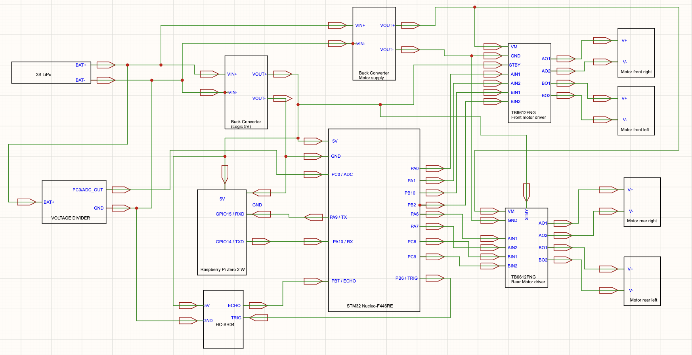
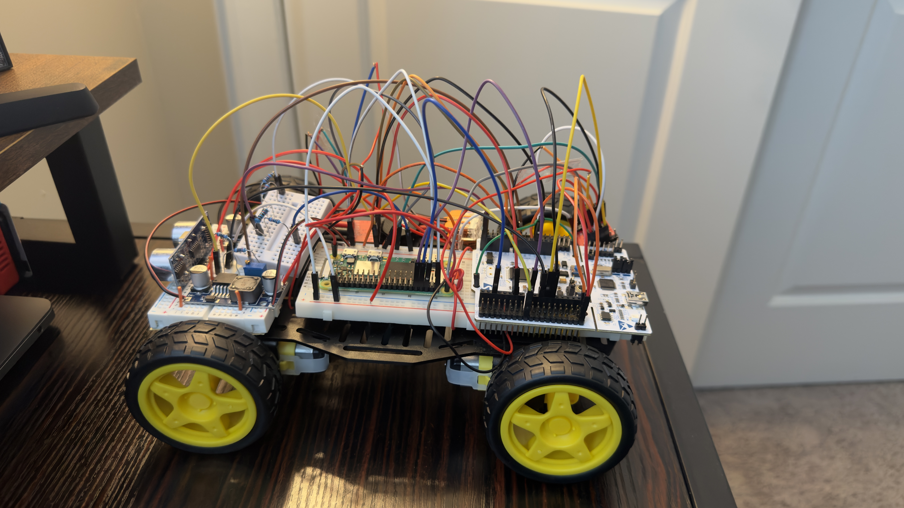

STM32–Raspberry Pi 4WD Vehicle
A four-motor embedded vehicle combining bare-metal STM32 firmware with Raspberry Pi browser control, real-time UART communication, PWM motor control, and LiPo battery monitoring.
Platform
STM32 + Raspberry Pi
Firmware
Bare-metal C
Communication
UART · 115200 baud
Motor Control
PWM

4WD vehicle prototype with the embedded control electronics installed.
4
DC drive motors
8
STM32 PWM outputs
115200
UART baud rate
3S
LiPo power source
Project overview
The goal of this project was to build a complete embedded vehicle that combined low-level microcontroller control with a higher-level browser interface.
The STM32 handled the time-critical hardware functions, including motor control and battery monitoring, while the Raspberry Pi provided the browser-based user interface and communication layer.
The result was a four-wheel-drive vehicle capable of receiving remote movement commands, controlling four DC motors, adjusting motor speed, monitoring battery voltage, and reporting vehicle status through a browser dashboard.
System architecture
The design separated the vehicle into two main computing layers.
- Raspberry Pi: browser-based control interface and high-level movement commands
- STM32: bare-metal firmware, UART communication, PWM generation, motor control, and ADC battery monitoring
- Motor-control hardware: four DC motors driven through dedicated motor-driver circuitry
- Power system: 3S LiPo battery with regulated power supplied to the control electronics
System Design
System architecture
The system separates browser control on the Raspberry Pi from low-level hardware control on the STM32.

System schematic showing the major control, communication, and hardware connections.
Bare-metal firmware
STM32 peripherals were configured directly at the register level, giving me direct control over timers, GPIO, UART, ADC, and PWM behavior.
Browser control
A Raspberry Pi browser dashboard provides directional commands, speed adjustment, and vehicle-status information through a simple web interface.
Power management
The vehicle uses a 3S LiPo battery with regulated power supplied to the control electronics and ADC-based battery-voltage monitoring.
Motor-control system
The vehicle required bidirectional control of four DC motors. To support this, I configured eight PWM outputs across STM32 timer peripherals using register-level C.
The motor-control logic allowed the vehicle to move forward, reverse, turn, stop, and change speed based on commands received through the UART connection.
PWM debugging
One of the major debugging challenges appeared when several motor channels did not operate reliably.
The issue was traced to the timer-channel and pin assignments being used for the PWM outputs. I rerouted the affected motor signals to STM32 pins connected to working timer channels.
After the signals were reassigned, reliable control was restored across the four motors.

Closer view of the vehicle hardware, wiring, motor-control electronics, and embedded components.
Raspberry Pi communication
The Raspberry Pi communicates with the STM32 through a 115,200-baud UART link.
The browser interface sends movement commands to the Raspberry Pi, which passes them to the STM32. This keeps the user interface separate from the time-critical motor-control code running on the microcontroller.
The dashboard provides controls for vehicle movement and speed while also giving the user a simple view of the vehicle's current operating state.
Configure motor-control peripherals
Configured STM32 timers and PWM outputs for bidirectional control of all four motors.
Connect Raspberry Pi and STM32
Established a 115,200-baud UART connection so browser commands could be transferred from the Raspberry Pi to the microcontroller.
Build the browser dashboard
Created a browser-based interface for directional control, stopping, and adjusting vehicle speed.
Implement battery monitoring
Used a resistor-divider circuit and the STM32 ADC to monitor the 3S LiPo battery voltage during operation.
Debug hardware integration
Diagnosed timer-output and pin-mapping issues and rerouted PWM signals until all four motors operated reliably.
Testing
Vehicle demonstration
Demonstration of the browser-controlled vehicle responding to movement commands while the physical car operates in real time.
Browser controls and physical vehicle operation during testing.
Battery monitoring and power
The vehicle is powered from a 3S LiPo battery. A resistor-divider circuit scales the battery voltage into the STM32 ADC measurement range so the microcontroller can monitor the battery during operation.
A DC-DC buck converter provides regulated power for the control electronics while the battery supplies the vehicle's power system.
Final system
The completed system brought together embedded firmware, hardware, communication, power management, motor control, and a browser interface into one working platform.
- Four-motor 4WD vehicle platform
- Bidirectional DC motor control
- Eight STM32 PWM outputs
- Bare-metal STM32 firmware
- Browser-based Raspberry Pi control
- 115,200-baud UART communication
- Adjustable motor speed
- ADC-based 3S LiPo battery monitoring
- DC-DC power regulation
What I learned
This project gave me experience integrating software and hardware across multiple levels of an embedded system.
The most valuable part was working through real hardware problems rather than only writing firmware in isolation. The PWM pin issue in particular reinforced the importance of understanding the microcontroller's timer-channel and pin-mapping constraints.
The project also required coordinating communication, power, motor control, firmware, and a user interface as parts of one complete system.
This project was developed as a hands-on embedded systems platform for experimenting with low-level firmware, motor control, Raspberry Pi communication, and hardware-software integration.